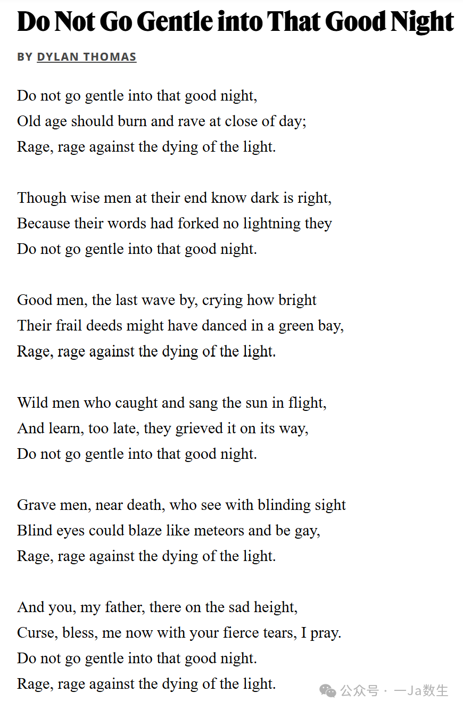
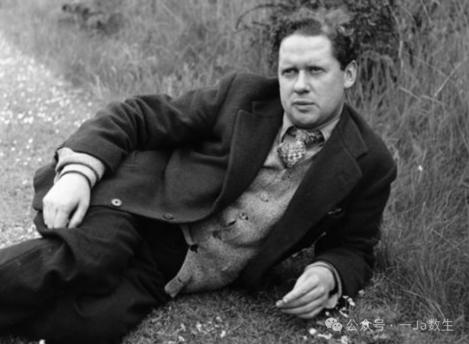
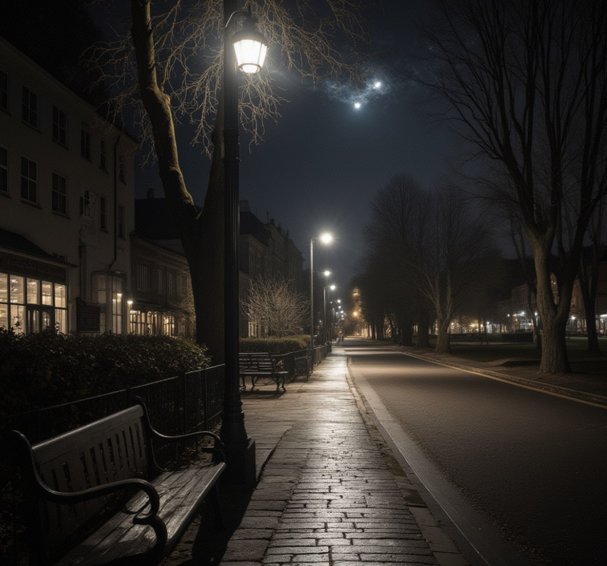
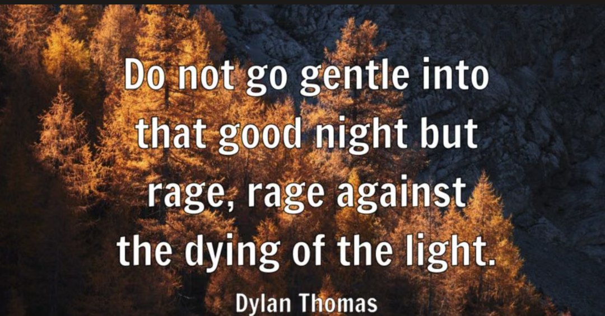
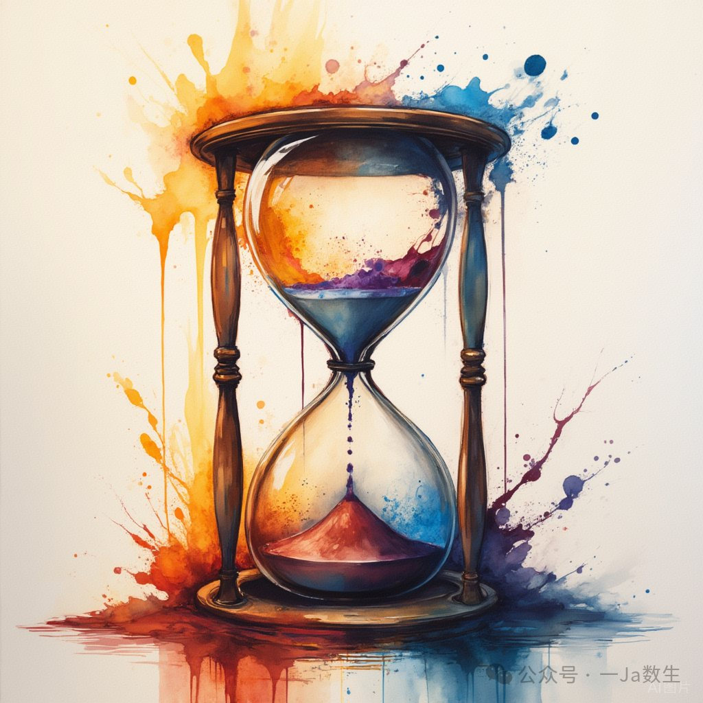
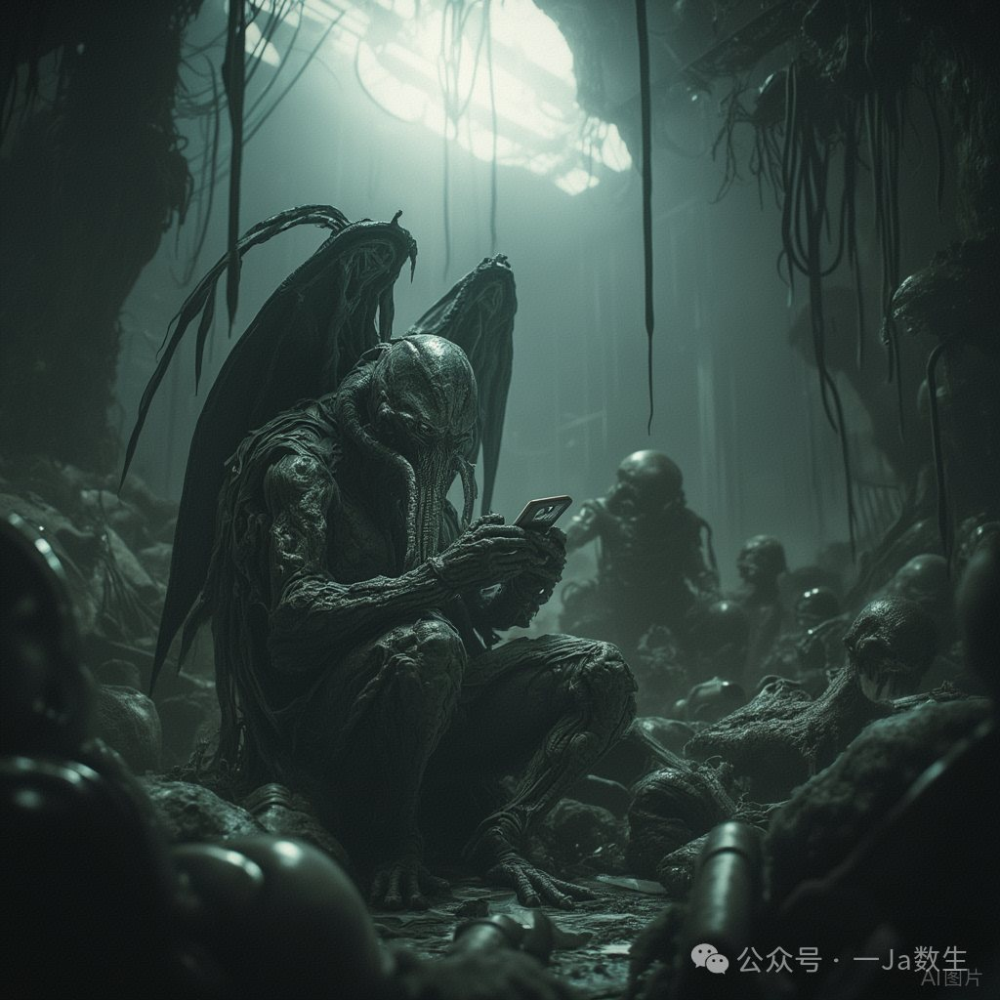

Analysis of "Do Not Go Gentle into That Good Night"

1. Poet, Publication, and Context
"Do Not Go Gentle into That Good Night" was written by Welsh poet Dylan Thomas (1914–1953) in 1947 and first published in 1951 in the journal Botteghe Oscure. The poem is often understood in the context of Thomas’s relationship with his father, D. J. Thomas, whose declining health and approaching death gave the poem a deeply personal dimension. Although the poem does not explicitly describe a particular illness or event, its final stanza directly addresses the speaker's father, transforming what initially appears to be a general reflection on mortality into an intimate emotional appeal.
The poem also reflects a broader human struggle with the inevitability of death. Rather than presenting death as something that should be calmly accepted, Thomas portrays the end of life as something against which people should struggle. His argument is not that resistance can ultimately prevent death, but that the desire to live remains valuable even when death is unavoidable.

2. Overall Meaning
"Do Not Go Gentle into That Good Night" is an appeal to resist death rather than surrender to it passively. The speaker repeatedly urges an older person to "rage, rage against the dying of the light," using the image of fading light to represent the gradual disappearance of life. The poem examines four different groups of men, wise, good, wild, and grave, each of whom approaches death with a different perspective. Despite their differences, all recognize, in some way, that their lives have not been fully realized.
Through these examples, Thomas suggests that even people who have lived meaningful and accomplished lives may experience regret when confronted with death. They may wish they had achieved more, expressed themselves more fully, or appreciated life more deeply. The poem ultimately moves from a universal statement about humanity's resistance to mortality to a personal plea directed at the speaker's father. Its emotional force comes from the tension between the speaker's desire to keep his father alive and his awareness that death cannot be avoided.

3. Form, Rhyme Scheme and Meter
The poem is written in the form of a villanelle, a highly structured poetic form consisting of nineteen lines arranged into five tercets followed by a final quatrain. It follows two recurring rhymes, -ight and -ay, and uses two alternating refrains: "Do not go gentle into that good night." and "Rage, rage against the dying of the light."
These two lines recur throughout the poem, eventually appearing together at the end. Their repetition gives the poem a forceful, almost chant-like quality, making the speaker's message sound increasingly urgent and insistent. The first refrain expresses resistance through a direct command, while the second intensifies that command through the repetition of "rage." Together, they establish the poem's central conflict between human determination and the inevitability of death.
The poem is predominantly written in iambic pentameter, although Thomas varies the rhythm to emphasize particular words and phrases. The relatively regular meter gives the poem a controlled, deliberate movement, while the repeated refrains create emotional intensity. This contrast between formal control and passionate language reflects the speaker's struggle: he attempts to impose order and meaning on an experience that is ultimately beyond human control.

4. Analysis
Stanza 1: The Refusal to Accept Death
The opening stanza establishes the poem's central argument: people should resist death rather than approach it quietly or passively. The phrase "that good night" presents death through a metaphor of darkness and nightfall. Night traditionally suggests rest, peace, and the end of a day's activity; describing death as "good" therefore acknowledges its association with natural rest and perhaps even release from suffering. However, the command "Do not go gentle" challenges this seemingly peaceful image. The word "gentle" suggests quiet submission, implying that the speaker rejects the idea that a person should meet death without resistance.
The second line develops this argument through the personification of old age, which "should burn and rave at close of day." The verbs "burn" and "rave" convey energy, passion, and anger, contrasting sharply with the physical decline associated with old age. The metaphor of the "close of day" reinforces the connection between the end of life and the setting sun. By suggesting that old age should continue to "burn," Thomas implies that the human desire to live should remain intense even when life is nearing its end.
The final line repeats the command to "Rage, rage against the dying of the light." The repetition of "rage" creates a forceful rhythm, communicating the speaker's desperation and determination. "Light" symbolizes life, consciousness, and vitality, while its gradual disappearance represents the approach of death. The contrast between light and darkness establishes the poem's central symbolic opposition: life is associated with energy and presence, while death is associated with disappearance and silence.
Stanza 2: The Wise Men and the Limits of Knowledge
The second stanza introduces the first group of men: the wise. Although they understand that death is inevitable, they still resist it because they feel that their lives have not produced the impact they hoped for.
The phrase "dark is right" suggests that wise men recognize the natural order of life: darkness, or death, is ultimately unavoidable. Their wisdom allows them to understand and accept this truth intellectually. However, the following line reveals that intellectual acceptance does not necessarily bring emotional peace. The image of their words having "forked no lightning" suggests that their ideas and knowledge have failed to create the powerful impact they desired. Lightning is associated with sudden illumination, energy, and dramatic force. By using this metaphor, Thomas implies that the wise men regret their inability to make their words sufficiently influential or transformative.
There is an important tension here: although these men understand that death is natural and inevitable, they still refuse to surrender quietly. Their regret comes from recognizing the gap between what they understood and what they actually accomplished. Thomas therefore suggests that even wisdom cannot eliminate the human desire to achieve something meaningful before life ends. The repetition of the first refrain reinforces this resistance, showing that knowledge of death does not necessarily lead to acceptance of it.
Stanza 3: The Good Men and Unfulfilled Potential
The third stanza shifts attention from intellectual achievement to moral action. The "good men" are presented as individuals who have lived virtuous lives but, as death approaches, recognize that their actions may not have been as significant as they could have been.
The image of the "last wave" suggests the final movement of life before it disappears, while the phrase "crying how bright" conveys a sense of admiration for the possibilities that once existed. Their "frail deeds" are imagined as having "danced in a green bay." This image combines movement, beauty, and vitality. The word "green" evokes youth, growth, and renewal, while the bay creates a natural setting in which their actions might have flourished. However, the adjective "frail" suggests that their actual achievements were limited or fragile compared with what they might have accomplished.
The image of deeds dancing also personifies human actions, giving them a sense of life and movement. The good men appear to recognize, perhaps only at the end of their lives, that their actions could have been more meaningful or impactful. Their regret is not necessarily that they have behaved immorally, but that they have failed to realize the full potential of their goodness.
Through this stanza, Thomas develops the idea that a morally respectable life does not necessarily guarantee a sense of fulfillment. Even people who have done good things may look back and wish they had done more. The recurring command to "Rage" therefore becomes an expression of regret over opportunities that can no longer be recovered.
Stanza 4: The Wild Men and the Loss of Time
The fourth stanza introduces the "wild men," whose approach to life contrasts with that of the wise and good men. These individuals have lived passionately and enthusiastically, embracing the pleasures and experiences of the world. However, as death approaches, they realize that their enjoyment of life may have prevented them from recognizing how quickly time was passing.
The phrase "caught and sang the sun in flight" creates a vivid image of these men celebrating life. The sun symbolizes vitality, beauty, and the passage of time. The verb "caught" suggests an attempt to seize the moment, while "sang" conveys celebration and uninhibited expression. These men appear to have lived intensely, appreciating the world through immediate experience rather than intellectual reflection or moral responsibility.
However, the following line reveals a change in their perspective. They "learn, too late" that they had "grieved" the sun on its way. The phrase suggests that, while they were absorbed in enjoying life, they failed to recognize that time was disappearing. The expression "too late" emphasizes the irreversible nature of time: once life has passed, its opportunities cannot be recovered.
This stanza introduces a subtle paradox. The wild men have not necessarily wasted their lives; indeed, they seem to have experienced life more intensely than the other groups. Yet they still experience regret because they did not fully appreciate the temporary nature of their experiences. Thomas therefore suggests that even a life filled with pleasure and excitement cannot completely protect a person from regret when confronted with mortality.

Stanza 5: The Grave Men and the Persistence of Inner Vitality
The fifth stanza describes the "grave men," a phrase that carries a deliberate double meaning. "Grave" can refer both to seriousness and to the place where the dead are buried. This association connects the men's personalities directly with their proximity to death.
The phrase "near death, who see with blinding sight" introduces an apparent contradiction. The adjective "blinding" suggests an intensity of vision so powerful that it overwhelms ordinary sight. The following line develops this paradox through the image of "Blind eyes" that "could blaze like meteors and be gay." Although these men may be physically weakened or even blind, their inner vitality remains powerful. Their eyes, which conventionally symbolize perception and awareness, are transformed into images of light, energy, and joy.
The comparison to meteors is particularly significant. Meteors are brilliant but temporary flashes of light in the darkness. They therefore resemble human life itself: beautiful and powerful, yet inevitably brief. By comparing the men's eyes to meteors, Thomas suggests that the human spirit can retain its intensity even as the body approaches death.
The contrast between physical blindness and intense inner vision also challenges the assumption that old age necessarily means the complete disappearance of vitality. These men may be close to death, but they are still capable of experiencing life with extraordinary emotional force. Their example reinforces the poem's central argument: physical decline does not eliminate the desire to live.
Stanza 6: The Personal Plea to the Father
The final stanza marks a significant shift in the poem's emotional direction. After discussing different groups of men in general terms, the speaker finally addresses his father directly: "And you, my father." This direct address reveals the personal motivation behind the preceding arguments. The poem is no longer simply a philosophical reflection on how humanity should confront death; it becomes an intimate appeal from a son who is struggling to accept the approaching loss of his father.
The description of the father as being "there on the sad height" combines emotional pain with an image of elevation. The word "sad" emphasizes the sorrow surrounding the father's condition, while "height" may suggest dignity, significance, or the elevated position of someone approaching the final stage of life. The phrase therefore presents the father as both vulnerable and worthy of profound respect.
The speaker then asks his father to "Curse, bless, me now with your fierce tears." The juxtaposition of "curse" and "bless" creates an emotional contradiction. These opposing actions suggest that the speaker does not expect a calm or conventional response. Instead, he wants his father to express his emotions intensely, even if those emotions are painful or contradictory. The adjective "fierce" reinforces the poem's recurring association between emotional intensity and resistance.
The final phrase, "I pray," introduces a more vulnerable tone. Although the speaker has repeatedly issued forceful commands throughout the poem, he now reveals that his resistance is ultimately an expression of desperation and love. He cannot control his father's approaching death, so he turns to language as a way of expressing his desire to keep him alive.
The poem ends by bringing the two refrains together. Their combined repetition creates a powerful conclusion, but it also reveals the limits of the speaker's argument. No matter how forcefully he urges his father to resist, he cannot guarantee that death will be defeated. The ending is therefore both defiant and deeply sorrowful: the speaker insists on resistance precisely because he cannot bear the alternative.
5. Overall Themes
(1) Resistance Against Death
The most obvious theme is the refusal to accept death passively. Through the repeated commands to resist the "good night" and the "dying of the light," Thomas presents the desire to live as a fundamental human instinct. Death may be inevitable, but the poem suggests that people should continue to value life until their final moments. Importantly, resistance does not necessarily mean believing that death can be defeated. Instead, it means refusing to allow the approach of death to erase one's vitality or dignity.

(2) Regret and Unfulfilled Potential
Each group of men experiences a different form of regret. The wise men regret their limited influence, the good men their insufficient achievements, the wild men their failure to appreciate the passing of time, and the grave men recognize the persistence of their inner vitality despite physical decline. These examples suggest that no life is entirely free from unrealized possibilities. Even those who have lived meaningfully may wish they had done more.
(3) The Value of Life and Human Vitality
Thomas repeatedly associates life with light, fire, movement, and energy. Images such as burning, dancing, singing, and blazing create a sense of vitality that contrasts with the stillness and darkness associated with death. These images suggest that the value of life lies not simply in its duration or accomplishments, but also in the intensity with which it is experienced.
(4) Love and the Fear of Loss
Although the poem initially appears to present a universal argument about mortality, its final stanza reveals a deeply personal concern. The speaker's insistence that his father resist death comes from his inability to accept losing someone he loves. The emotional intensity of the final address suggests that the poem is not merely concerned with how people should die, but also with how those who remain struggle to face the death of someone close to them.
6. Important Literary Techniques
(1) Extended Metaphor and Symbolism
The poem's most important metaphor is the association between death and nightfall. "That good night" represents death, while the "dying of the light" symbolizes the gradual disappearance of life. This imagery allows Thomas to discuss mortality without describing it directly. The contrast between light and darkness also creates a symbolic opposition between vitality and extinction, presence and absence.
(2) Repetition and Refrain
The two recurring lines form the structural and emotional foundation of the poem. Their repetition reinforces the speaker's determination and creates a sense of urgency. However, their meaning also develops throughout the poem. Initially, they sound like general instructions about how people should confront death. By the final stanza, they become a desperate personal plea directed at the speaker's father. The repetition therefore reflects the speaker's growing emotional involvement.
(3) Paradox and Oxymoron
Thomas frequently uses contradictory images to express the complexity of approaching death. The "blind eyes" that can "blaze like meteors" suggest that physical weakness does not necessarily eliminate inner vitality. Similarly, the phrase "blinding sight" combines blindness with an overwhelming form of vision. These paradoxes suggest that the final stage of life may reveal emotional or spiritual intensity that is not easily measured by physical condition.
(4) Personification
Old age is personified as something that should "burn and rave," while human deeds are imagined as dancing. These descriptions give abstract concepts physical energy and movement. By presenting old age as capable of burning and raging, Thomas challenges the conventional association between aging and passivity. The technique reinforces his argument that the desire to live should remain active even when the body begins to decline.
(5) Imagery and Sensory Language
The poem uses vivid visual and kinetic imagery, including lightning, sunlight, waves, dancing, and meteors. These images create a world filled with movement and brightness, making the darkness associated with death feel particularly threatening. The contrast also allows Thomas to portray life as something dynamic and beautiful, rather than merely a period of existence before death.
(6) Alliteration and Sound
The repeated hard consonants in phrases such as "burn and rave" and "Rage, rage" give the poem a forceful, almost aggressive sound. The repetition of strong sounds reinforces the speaker's anger and determination. Meanwhile, the recurring end rhymes create a musical quality that makes the poem sound almost like an incantation. This combination of musical regularity and emotional intensity reflects the speaker's attempt to confront an uncontrollable reality through language.
7. Deeper Interpretation
(1) The Difference Between Accepting Death and Accepting the End of Life
One of the poem's most interesting tensions lies in its treatment of wisdom. The wise men understand that death is natural and inevitable, yet they still resist it. This creates a distinction between intellectually accepting the reality of death and emotionally surrendering to it. Thomas does not necessarily suggest that people should deny their mortality. Rather, he questions whether understanding that death is inevitable should require people to welcome it passively.
The phrase "dark is right" is particularly important because it acknowledges that death belongs to the natural order of existence. Nevertheless, the wise men still rage against it. This suggests that rational understanding and emotional response do not always agree. A person can recognize that death is unavoidable while continuing to feel that life is worth fighting for. In this sense, the poem presents resistance not as an act of ignorance, but as an expression of the emotional significance of being alive.
(2) The Paradox of a Life That Is Never Fully Complete
The four groups of men represent different ways of living, but none of them appears entirely satisfied when approaching death. The wise men have not made their words sufficiently influential; the good men regret the limited impact of their actions; the wild men realize too late how quickly time has passed; and the grave men discover that their inner vitality remains despite their physical decline.
This pattern raises a deeper question: Is it possible to feel that one has lived a completely fulfilled life? Thomas does not provide a definitive answer. Instead, he suggests that human beings may always perceive a gap between the life they have lived and the life they could have lived. The awareness of mortality makes this gap particularly painful because death removes the possibility of correcting it.
However, the poem can also be interpreted more positively. The men's regrets demonstrate that they still care about their experiences, achievements, and unrealized possibilities. Their desire to resist death therefore reflects the continuing value they place on life. Even regret, in this sense, becomes evidence of their attachment to existence.
(3) The Limits of Human Control
Despite its forceful language, the poem contains an underlying recognition that human resistance cannot ultimately overcome mortality. The speaker repeatedly commands his father to fight death, but the commands themselves cannot change the natural course of life. This creates a tension between the speaker's powerful language and his actual powerlessness.
The villanelle's strict structure reinforces this tension. The refrains return again and again, as though repetition might make their message more powerful or even alter reality. Yet the poem always returns to the same central conflict: life is disappearing, and the speaker cannot stop it. The form therefore becomes an expression of the human desire to impose control on something fundamentally uncontrollable.
This interpretation makes the poem more complex than a simple celebration of defiance. Its repeated commands are not necessarily expressions of confidence that death can be defeated. They may instead reveal the speaker's desperation in the face of something he cannot accept or change.
(4) Resistance as an Expression of Love
Ultimately, the poem's emotional meaning becomes clearest in its final stanza. The speaker's address to his father reveals that his argument about resisting death is motivated not only by a general belief in the value of life, but also by personal love and fear of loss.
His request that his father "Curse, bless, me now with your fierce tears" is particularly revealing. He does not ask his father to offer reassurance or to accept his situation peacefully. Instead, he wants an intense emotional response, even if that response involves anger or pain. What matters is that his father remains emotionally present and continues to resist disappearing.
The poem can therefore be understood as an attempt to communicate something that the speaker cannot express directly: he does not want his father to die because he is not ready to lose him. His insistence on resistance becomes a way of expressing attachment. The more powerless he feels, the more forcefully he repeats his commands.
This also explains the poem's emotional contradiction. Although the speaker appears to be telling his father how he should face death, he may actually be expressing his own inability to face his father's death. The poem's apparent confidence is therefore inseparable from its vulnerability.
8. Conclusion
“Do Not Go Gentle into That Good Night” is ultimately more than a poem about refusing to accept death. Through its exploration of different kinds of men, Thomas examines the regrets, ambitions, and emotional attachments that make human life meaningful. Its central message is not that death can be defeated, but that the approach of death does not erase the value of living.
The poem's movement from universal reflection to personal appeal reveals its deepest concern: the struggle to preserve a meaningful connection with life and with those we love. Its repeated refrains express defiance, but beneath that defiance lies an awareness of human helplessness. The speaker's commands cannot prevent his father's death, yet they communicate the intensity of his love and his unwillingness to surrender emotionally.
Ultimately, Thomas presents resistance as both an affirmation of life and an expression of love. The poem recognizes that every life must eventually come to an end, but insists that its final moments can still be filled with dignity, passion, and emotional intensity.